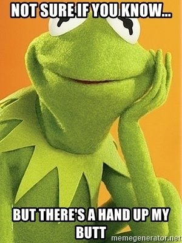

--Adyashanti
After the intensity of last week’s Mind-Tickler, I thought maybe it would be fun to try something different.
Ready? Let’s play a game.
Step 1: Start by noticing and jotting down a few of the “buts” in your life. For example, these are things people have said to me recently:
• I love my husband but I’m not interested in having sex with him.
• I’ve gotten through this month but I don’t know how I’m going to pay my bills next month.
• I’m surviving, but I’m depressed all the time.
• My family’s not too bad right now, but they drive me totally nuts.
• My mother is still holding on but it’s not looking good.
• I’m okay now but that childhood trauma still affects me.
• I’ve had an awakening but it didn’t last and I want it back.
• I’m not anxious right now but usually it’s always here.
• I love cake but it makes me fat.
Make a little list of your own personal “Buts.”
You know you’ve got them; everyone does. The mind just loves those suckers.
As you look at your list, you might begin to notice that the first half of these sentences- the words before the But- are often statements of Okayness. “I’m surviving”, “I love my husband,” etc.
And then with the word But, that okayness is stolen right out from under you.
Instantly. All in one sentence.
The part after the But is not-okayness.
Almost as if thought has some kind of quota for okayness. Like it prefers the pain and is eager to get back to it.
It lets us have not-pain for about 2 whole seconds.
And then mind says, “Yeah yeah, okay, enough of that,” and quickly uses “But” to bring us back to not-okay, and back to hurting.
And then the sentence ends, and it just... leaves us there.
Well, that kind of sucks doesn’t it?
So, step 2 of our game:
Switch the before-the-But and the after-the-But words.
Examples:
• I’m not interested in having sex with him but I love my husband.
• I don’t know how I’m going to pay my bills next month but I’ve gotten through this month.
• It didn’t last and I want it back but I’ve had an awakening.
• It’s not looking good but my mother is still holding on.
Notice a difference?
Same words, just switched in order, and suddenly the same circumstances are less fraught.
It's calmer, gentler.
There’s even easier access to gratitude.
That’s because words are a description of experience, not actual experience itself. And thoughts are words (or images).
They're symbols, not the real thing.
So without having to change any actual circumstance (because really, good luck with that), it’s still possible to shift our experience of any given circumstance….
Just by playing with descriptions of it.
Which means that by trying this easy little word game, we might actually find ourselves...
Hurting less.
Without having to do a thing to actual situations.
Wouldn't it be something to end sentences with peace instead of pain once in a while?
Not because Buts are bad, and not because But’s usual focus on pain is bad, and not even because pain is bad.
Just simply because you can. And just simply because it may not be necessary for words to leave us with pain all the time.
Once in a while, maybe we can be allowed to enjoy a different description of this life we’re living.
Just for a different experience.
So maybe you’ll go for it.
Or not.
Either way, I wish for you more ease, more lightness, more satisfaction, more acceptance.
And of course, happy Butting.
Click here to watch Judy on Buddha at the Gas Pump
Click to watch Judy and Walter have fun chatting about about
nonduality, the self, consciousness, awareness, free will
and other light and breezy stuff
Judy And Robert Saltzman talk nonduality
and again: https://www.youtube.com/watch?v=7fv_vsvaejs
and again: https://www.youtube.com/watch?v=3DAn8Rqg3I0
"With our thoughts we make the world."
--Buddha
